Visiting Japan has been one of the best decision I have ever made in 2019. Honestly, I was looking forward to this travel for a long time since I left JHU. Japan is always a charming place to me not only for Japanese Animation, but for its culture such as 剑道, 茶道 and 樱花 as well.
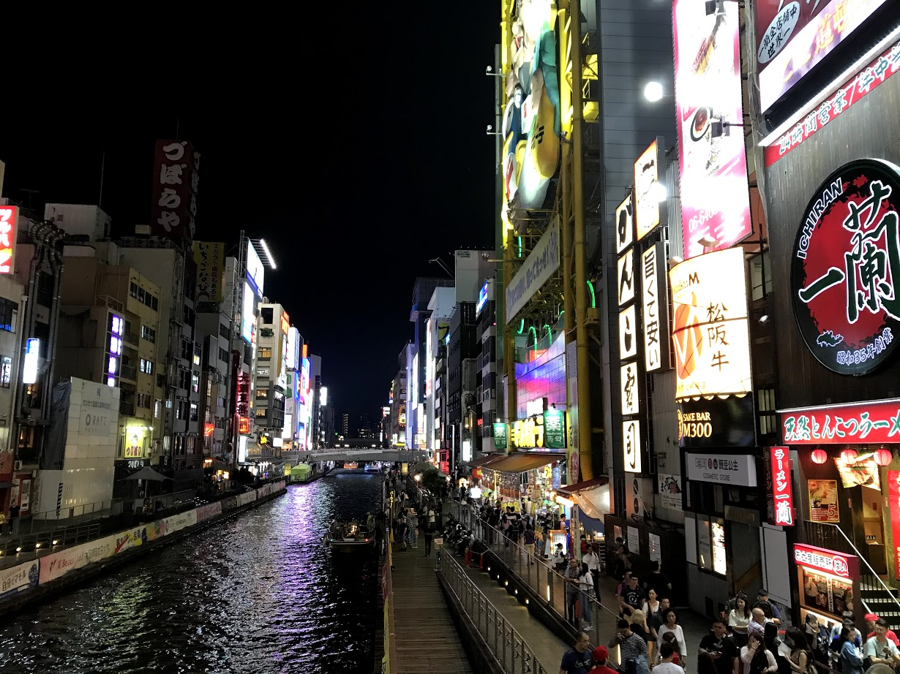
Here are our travel plan
Sept 30th
大阪
难波站
日本桥
Oct. 1st
大阪
大阪城公园
心斋桥
道顿堀
梅田蓝天大厦-空中庭园展望台
Oct. 2nd
奈良 & 京都
奈良公园
春日大社
Oct. 3rd
京都
伏见稻荷大社
京都二条城
豆柴咖啡厅
花见小路
Oct. 4th
京都 -> 东京
秋叶原
Oct. 5th
东京
Sky Tree
水族馆
すみだ北斎美術館
秋叶原
东京塔
Oct. 6th
东京
From Software
新宿（迷路了）
躺尸
Oct. 7th
东京
秋叶原
OK, I knew you might complain that you guys went to 秋叶原 too many times!
But it was indeed a charming street and we really enjoyed shopping there :)
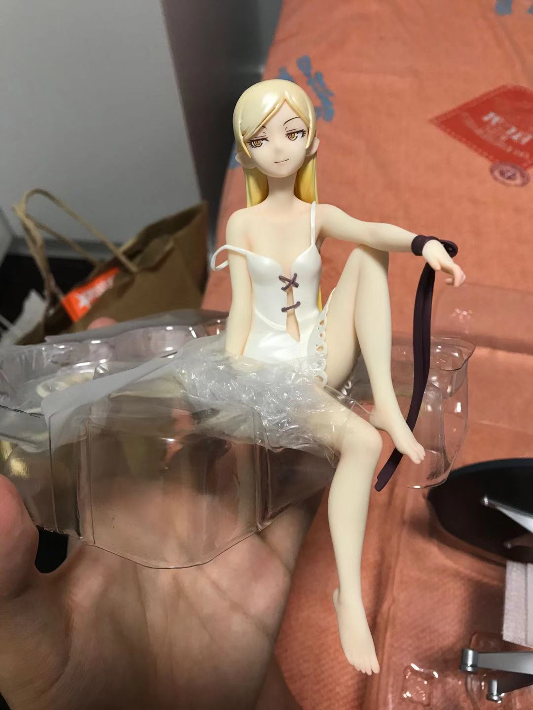
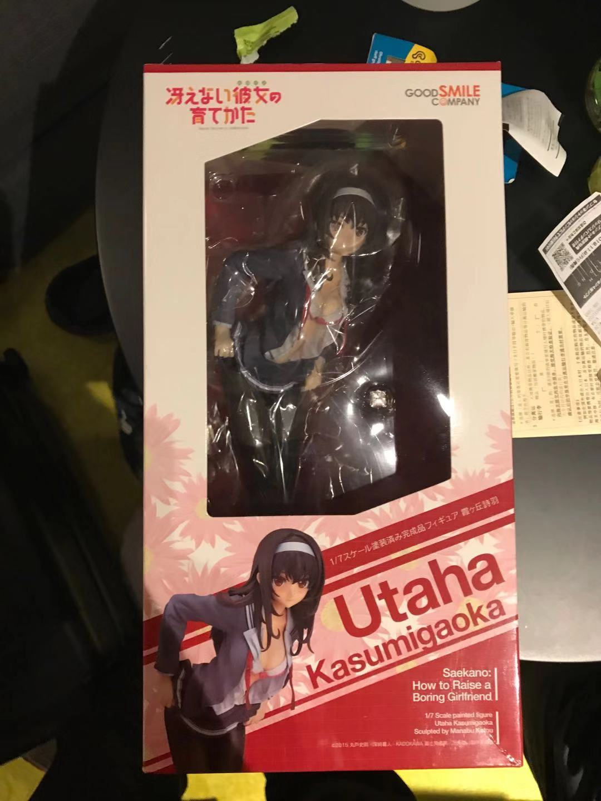
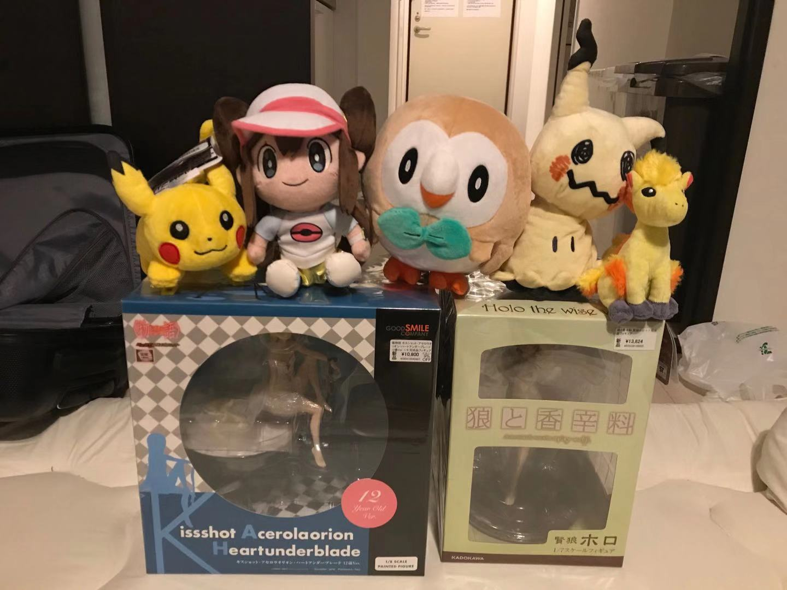
What's more, If you think went to 秋叶原 three times was really crazy, then this fact may drive you mad:
We went to Pokemon Center
four times.
That means, no matter where we went, we would never miss any pokemon centers in that city!
Just like playing Pokemon Game, the first place we went when arriving a new city was always Pokemon Center.
Let's go throught all of them
大阪Pokemon Center
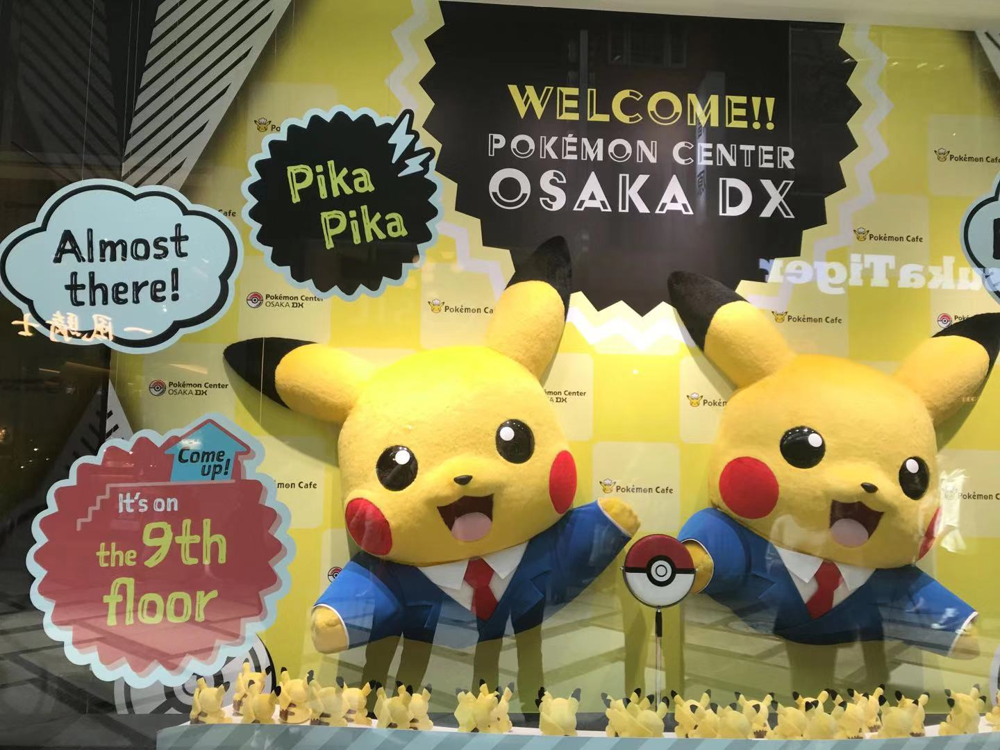
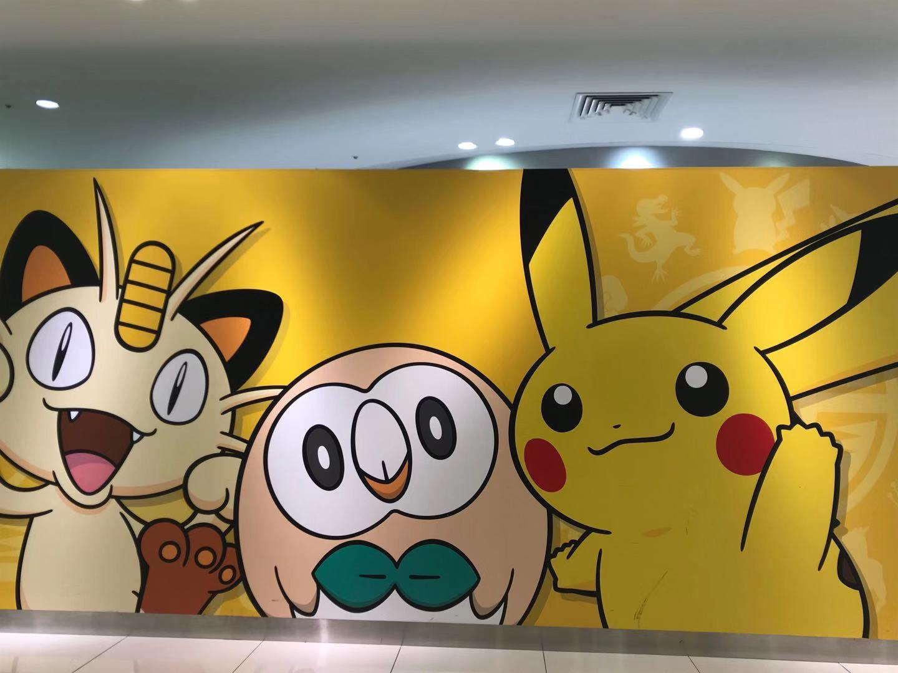
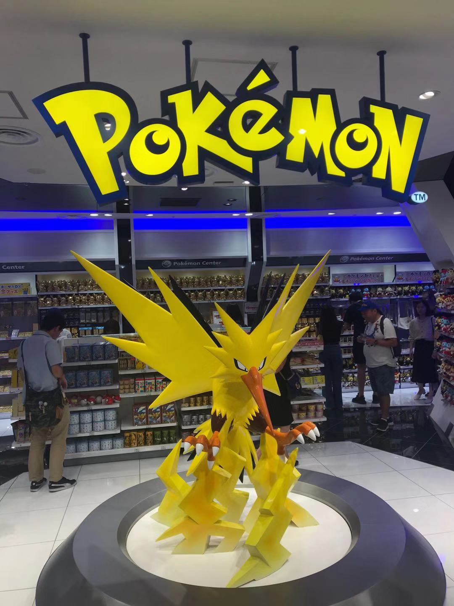
京都Pokemon Center
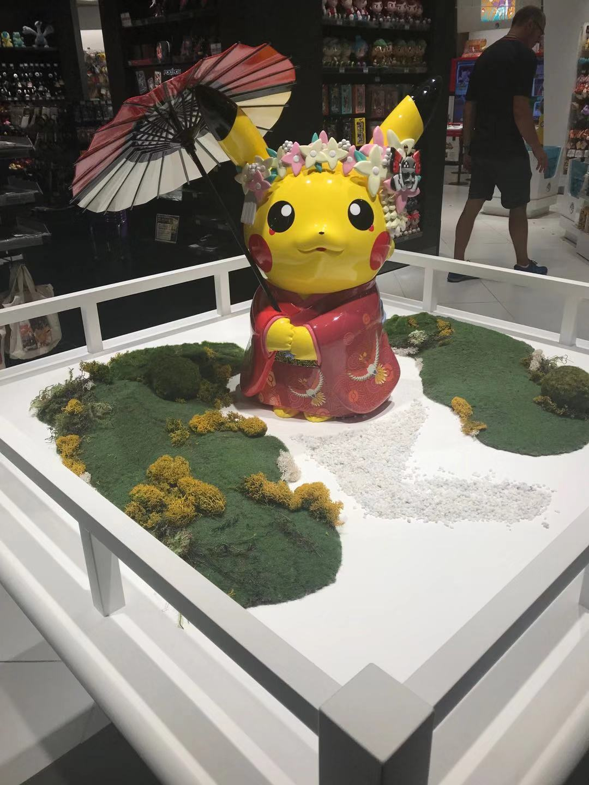
东京Pokemon Center
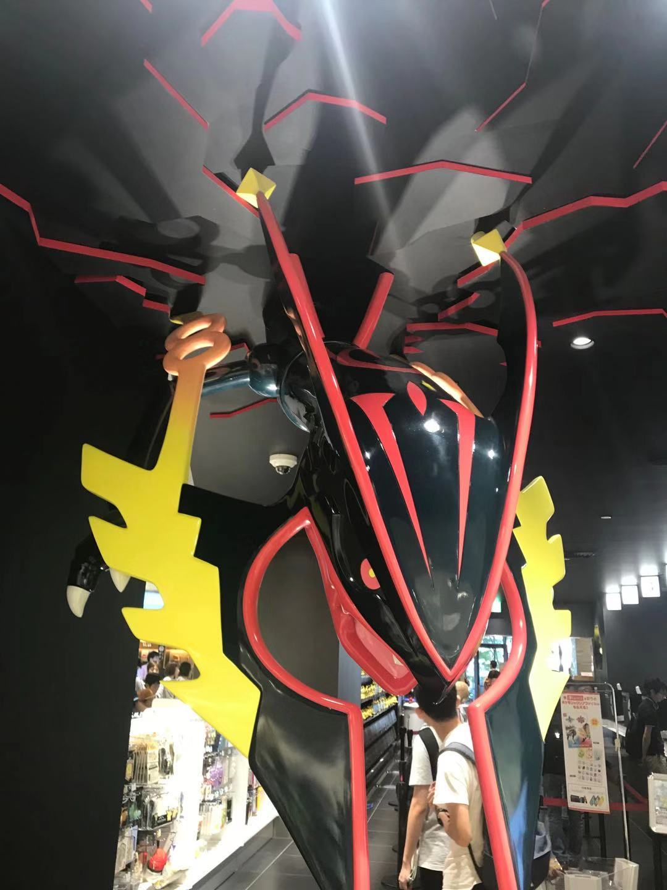
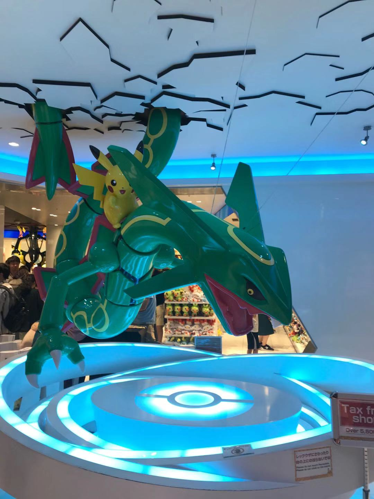
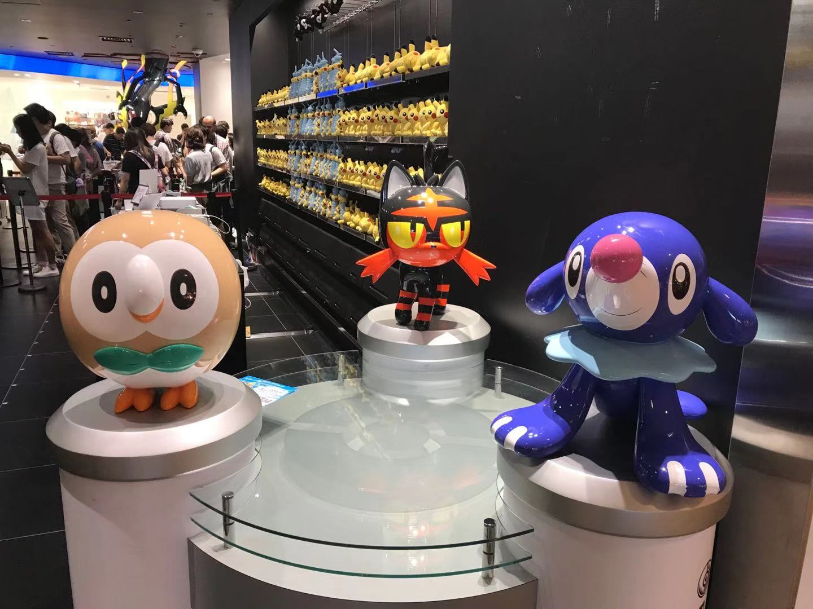
What is the F**king Difference?
I Have No Idea